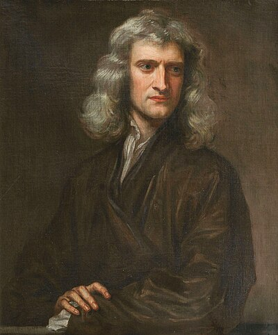

1643–1727
English
Calculus, physics, optics, astronomy
Newton is commonly regarded as the greatest scientist who ever lived, and his mathematical contributions alone would justify the title. Born prematurely on Christmas Day 1642 in Woolsthorpe, Lincolnshire, he was raised by his grandmother after his mother remarried. He entered Trinity College, Cambridge, in 1661 and within four years had laid the foundations of calculus, the theory of colours, and the law of gravitation.
Newton's mathematical breakthrough came during the "annus mirabilis" of 1665–1666, when Cambridge closed due to plague and Newton retreated to Woolsthorpe. He developed his "method of fluxions" — what we now call differential and integral calculus — conceiving of quantities as flowing and their derivatives as rates of flow. He did not publish these results for decades, a delay that led to the bitter priority dispute with Leibniz.
Newton's approach to power series was radical: treat complicated functions as infinite polynomials, then compute with them using ordinary polynomial arithmetic. He discovered the binomial series $(1+x)^r = \sum \binom{r}{k} x^k$ for non-integer $r$, found power series for $\sin$, $\cos$, and $\ln(1+x)$, and used series to solve differential equations. This "infinite-polynomial programme" is the starting point of Phase 4 in this course.
The Principia (1687) unified physics under mathematical law, but Newton deliberately cast it in geometric language rather than his own calculus, perhaps to make it inaccessible to critics. He served as Warden and then Master of the Royal Mint, became President of the Royal Society, and was knighted in 1705. He died in 1727, having dominated English science for half a century. His temperament was secretive, vindictive, and solitary — but the mathematics speaks for itself.
| Phase | Page | Referenced for |
|---|---|---|
| Phase 0 | Coordinate Geometry | Co-invented calculus; needed Descartes' coordinates first |
| Phase 2 | Completeness of $\mathbb{R}$ | Used real numbers without formal foundation |
| Phase 3 | The Derivative | Method of fluxions (1660s) — rates of change |
| Phase 3 | Differentiation Rules | Developed differentiation rules alongside Leibniz |
| Phase 3 | The Riemann Integral | Treated integration as reverse differentiation (1660s–1680s) |
| Phase 3 | The Fundamental Theorem of Calculus | Co-discovered the FTC; fluents and fluxions |
| Phase 4 | Taylor's Theorem | Infinite-polynomial programme — write functions as power series |
| Phase 4 | Taylor's Theorem | Discovered specific Taylor series instances (1690s) |
| Phase 4 | Sine and Cosine from Scratch | Computed the power series for $\sin$ by inverting $\arcsin$ (1669) |
| Phase 4 | Abel's Theorem | Infinite-polynomial programme put on rigorous footing |
| Phase 7 | Implicit and Inverse Function Theorems | Newton's method with frozen derivative |
| Phase 8 | First-Order ODEs | Invented calculus largely to solve differential equations |
| Phase 9 | The Banach Fixed Point Theorem | Newton's method as contraction mapping application |